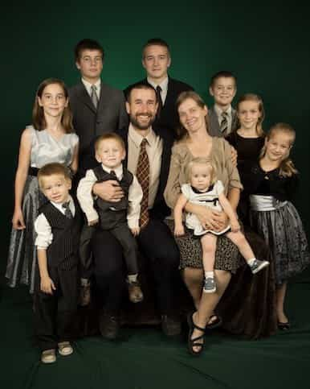
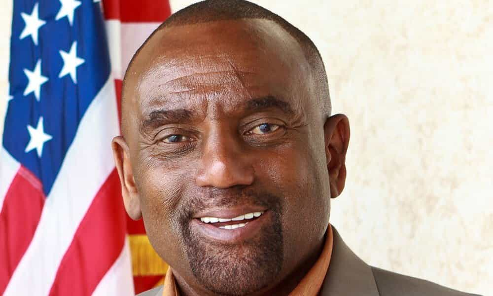
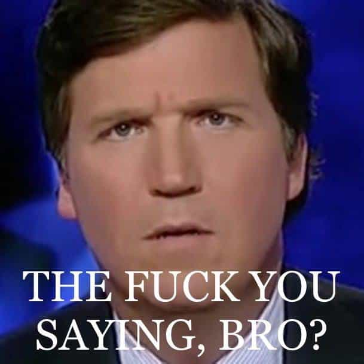

Edgar Tru is a Southern-based objectivist, natural-minded contrarian, and eleutheromania. Follow me on Gab.


I am not religious. I’ve amused spirituality and with other ventures in seeking anything which may be above, or below, us. I would still consider myself leaning more on the atheist side of the spectrum; however, I am not militant in regards to spitting upon religion’s face as I once was back in those naïve years of liberal atheism. But I can still appreciate a Sam Harris or Christopher Hitchens book here and there, despite our opposing views.
I enjoy listening to others divulge their set religious or spiritual beliefs and practices. Everything from a recently converted Roman Catholic, to a Southern-based witch and her rituals with witchcraft, to the exorcist Bob Larson, whom I’ll first be discussing.
I’ve witnessed our contemporary liberal society, whom seemed to only seek equality for all, take advantage by doing the exact same thing they claimed was perpetuated against them. A recent example is the bake-a-gay-cake scenario. The bakers were far less discriminating toward the queer couple because, despite not approving of their lifestyle or whichever way you view it (nature vs. nurture), they are still willing to provide them with already available options. The queer couple, however, are the ones who act on moral supremacy and are willing to invoke government to essentially financially (including risk of jail) pressure the bakery to perform an action they are religiously against.
One is being denied a service with other readily available options, while the other is being forced to perform a task without any other options. See how big the difference is? This proves quite easily that separation of Church and State is a lie.
So, here are five pastors I find to be pretty damn cool.
Bob Larson was the slick cat who interviewed the first official Family of Satanism. Heading off with some other cats who, to the offense of even liberals and the era of the flower children back way when, held fascist-esque views and espoused ideals adhering to Might Is Right. Truly glorious characters they are.
Bob Larson has come into controversy for perhaps obvious reasons. He’s been seen to be taking advantage of folks and their naivety in terms of understanding science and mental illness. And that may be so. Myself, I can not be certain, but, either way, I still enjoy watching a good exorcism and the flailing of the supposed possessed victim. No disrespect intended either.
I will not attempt to mock these folks, as they could be potential victims of ‘evil’ spirits or be mentally disturbed. They may outright be paid actors. Either way, Bob Larson chucks on through the liberalism of today and does not back down from the beliefs he espouses he adheres to.

Steven Anderson is far more controversial than the previous mentioned. He is a beautiful spark of “No homos will ever be allowed on this church as long as I’m the pastor here! Never!” that spits fire in the face of today’s peer-pressuring society. You often times, more than not, must accept (or be friendly-esque) gay marriage with open arms or be labeled a bigot or homophobic. Regardless of my views on gay marriage—I frankly do not care who wishes to invoke even more government into their lives—I can appreciate Pastor Anderson’s piss-and-grit honesty as he attempts to stand by what he preaches.
He’s also no comrade to this idea that Jews are God’s chosen people. His documentary Marching To Zion attempts to expose this lie of Jews being this special chosen group. Now, I am no expert on religious studies; however, from the perspective of any Israel-supporting West-bound Christian, this documentary may be of value to you.
If that isn’t fuel-to-fire enough, then take his questioning of the Holocaust and the official numbers. Regardless of the numbers, or whether there were gas chambers or an attempt to literally genocide an entire group, it is still a hot topic that one even dares to question the official body count. And I can appreciate that he does not back down in the face of flying accusations he’s a racist, anti-Semite or else-wise. He holds to what he feels God is and marches onward.

On his show, he’s had on atheist Jaclyn Glenn, anti-white propagandist Tariq Nasheed, white nationalist Richard Spencer, heavy metal LaVeyan Satanist Brian Werner, transgender Blaire White, and quite a few other fun guests.
What I appreciate about this man is how loving he seems to be. He’ll have on seemingly anyone just because he wants to chat. It doesn’t matter what side the spectrum you’re on, whether politically, religiously, culturally. This attitude is clearly lost to many folks, both leftist and right-wingers. He doesn’t have to support your set values, but he also doesn’t have to be this hot-headed antagonist either. I can really appreciate that about a person.
This man grew up working on a plantation, yet harvests no anti-white hatred. In fact, if one listens to him regularly, you’ll find he’s alt-right friendly and understands the issues plaguing the black folk and that it’s not all the cracker’s fault, and that America would most likely be better off with a European-based majority.
This is a less-known cat. He operates the Sanctuary International Matrix. He’s a heavy metalist and pastor. In one of his videos, he displays a sentiment of minimalism, which I’ve come to embrace more and more into my adult years.
When he felt the Lord told him to downsize, he went from a home of 4300 square feet to 300 square feet. Even in lack of religious adherences, I do not engage in consumerism. I find it often repulsive, empty and overall not satisfying. I’ve not been sucked into this consumer-based deadened society hell-bent on the latest Apple product, despite how fantastic some of their products no doubt are. I’m still pro-PC, anti-MacBook, though.
One thing I really appreciated was he once talked about Christians who takes a non-Christian’s moment of despair or depression, as an attempt to basically say, “If you accept Christ you’ll be happy.” He recognized the dishonesty in that because, as he essentially said, everyone (religious or otherwise) suffers from time to time, and that taking advantage of someone in their time of grief isn’t very dignified. That’s a solid approach to being more honest in your life, especially as a Christian.
Again, as I made mention way above, in this West-based era of liberalism and the pressures it cast upon so many who defy it, standing by your religious values can be difficult; especially, since science may give way to addressing many topics within religion, I still find a sense of respect and admiration to those standing by their beliefs. And given, statistically speaking, many atheists lean toward leftist politics, I find myself distancing from them more every day.
I cannot handle this overblown sarcasm of atheist like Kyle Kulinski and this smug, bitched-tongue attitude he displays toward many Christians, along with his followers and those alike. It repulses me greatly. And I now see quite clearly why Tucker Carlson always displays that the-fuck-you-saying-bro? face.

Read Next: Does God Have A Place In The Red Pill Man’s Life?